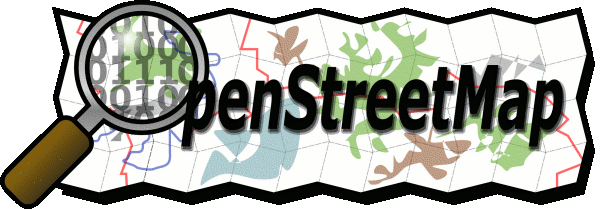

OpenStreetMap - Kontakt
OpenStreetMap besteht aus einem weltweiten, losen Zusammenschluss von Menschen. Momentan sind die Projektmitglieder in Deutschland noch nicht in einer Rechtsform organisiert. Es ist allerdings geplant, einen OpenStreetMap e.V. zu gründen.
Um Kontakt mit uns aufzunehmen, trägt man sich am besten in die deutschsprachige Mailingliste ein und stellt dort seine Fragen.